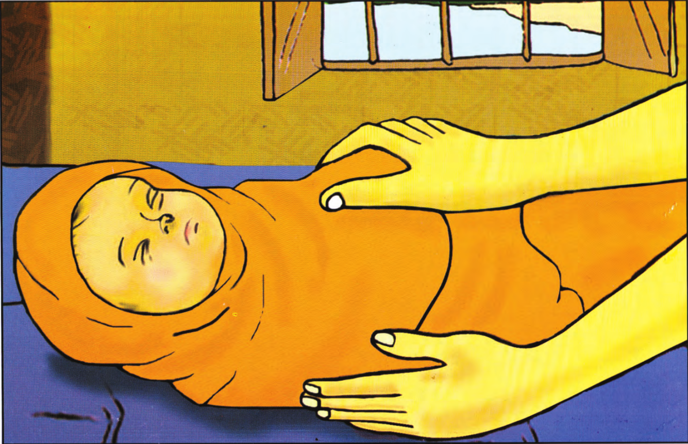
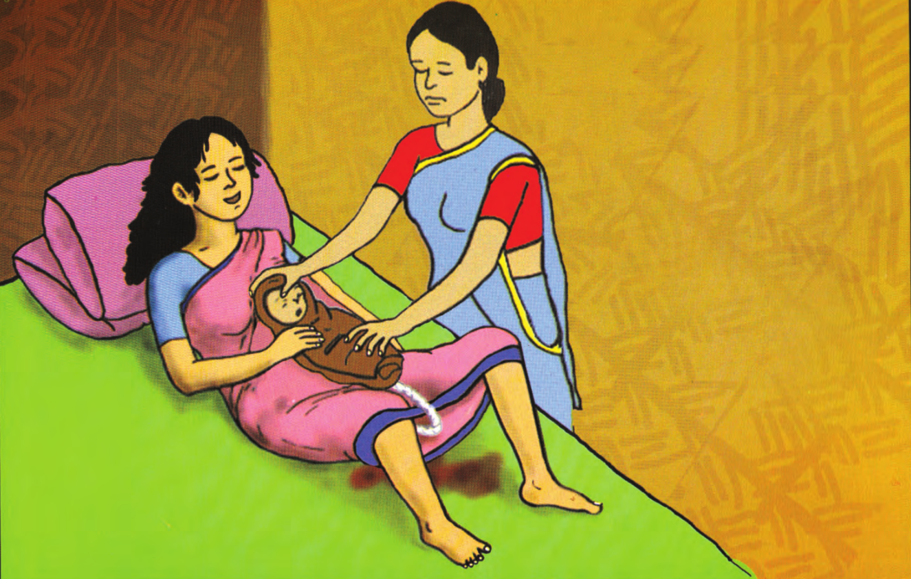

| জন্মের সাথে সাথে গর্ভফুল পড়ুক বা না পড়ুক পরিষ্কার কাপড় দিয়ে নবজাতকের মাথাসহ সমস্ত শরীর ঢেকে রাখুন।
কারণ: শিশুর ত্বক খুব পাতলা থাকে। ঢেকে না রাখলে সহজেই শরীর থেকে তাপ বেরিয়ে যেতে পারে। এছাড়াও মায়ের পেটের ভেতর শিশু পানির থলির মধ্যে বাইরের পরিবেশের চেয়ে বেশি তাপমাত্রায় থাকে। এজন্য বাইরের ঠান্ডা পরিবেশে পরিষ্কার কাপড়ে ঢেকে না রাখলে শরীর থান্ডা হয়ে নবজাতকের মৃত্যুও হতে পারে। |
|  |
| শিশুকে মায়ের পেটের উপর অথবা কোন গরম জায়গায় শুইয়ে পরিষ্কার কাপড় দিয়ে সমস্ত শরীর মুছে দিন।
কারণ: মাটিতে ঠান্ডা জায়গায় রাখলে শরীর থান্ডা হয়ে নবজাতকের মৃত্যুও হতে পারে। |
|  |
| শিশু কাঁদছে কি না, ঠিকমতো শ্বাস নিচ্ছে কি না এবং গায়ের রং গোলাপী কি না তা লক্ষ্য করুন।
কারণ: জন্মের পরপর নবজাতক শ্বাস না নিলে অথবা না কাঁদলে এবং গায়ের রং নীল বা ফ্যাঁকাশে হয়ে যেতে থাকলে বুঝতে হবে নবজাতকের শ্বাসরুদ্ধতা হয়েছে। ৩০ সেকেন্ডের মধ্যে ব্যবস্থা না নিলে শিশুর মৃত্যু হতে পারে। |
| গর্ভফুল পড়ুক বা না পড়ুক জন্মের সাথে সাথে শিশুকে শালদুধ খাওয়ান।
কারণ: শালদুধ শিশুর জন্য সবচেয়ে পুষ্টিকর যা তাকে বিভিন্ন রোগ থেকে রক্ষা করে। অল্প পরিমাণ শাল দুধ শিশুর জন্য যথেষ্ট এবং পুষ্টিকরও যা তাকে বিভিন্ন রোগ থেকে রক্ষা করে। এছাড়াও মায়ের গর্ভফুল দ্রুত পড়তে সহায়তা করে ও প্রসবপরবর্তী রক্তক্ষরণ কমায়। । |
এই বিষয়ে বিস্তারিত জানতে ক্লিক করুন এখানে